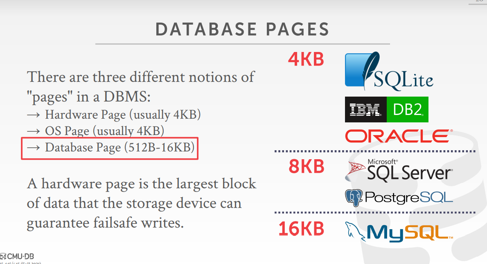
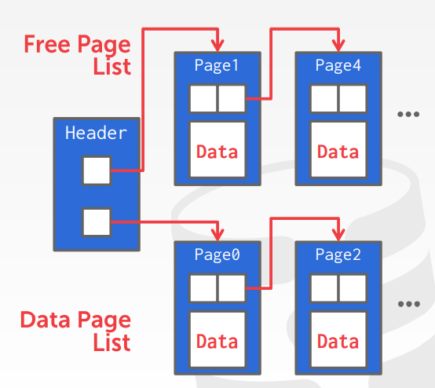
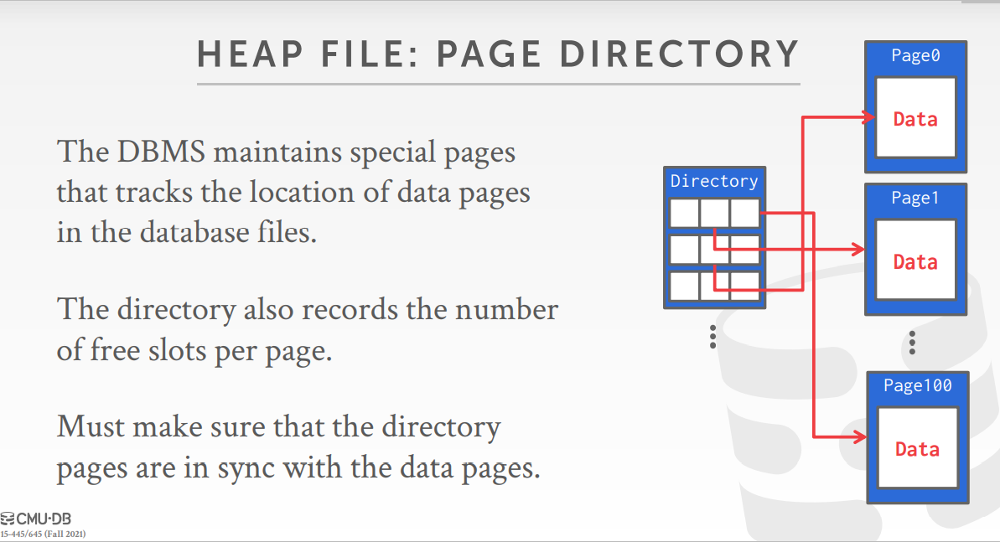
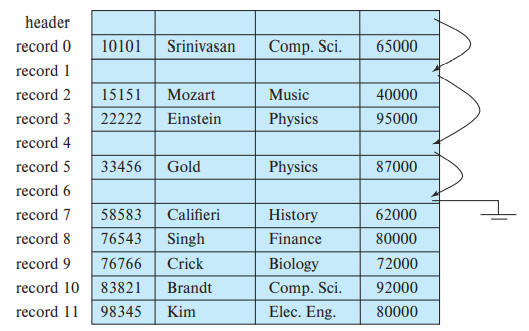
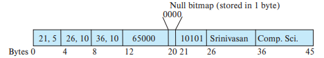
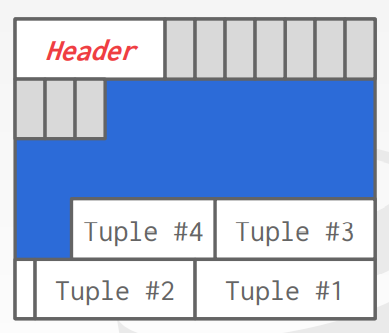
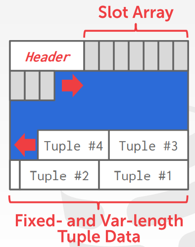
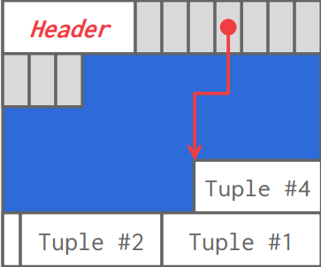
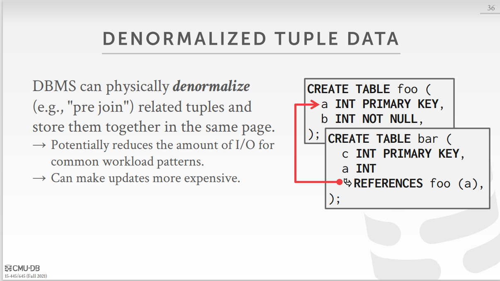

数据库系统概念:数据存储结构
page的组织
一个数据库会被映射为多个不同的文件，一个文件在逻辑上会被组织为tuple的序列，这些tuple被映射到磁盘块上
一个文件可以被细分为页，页是数据传输的单位，一个页包含若干条tuple
数据库的page
数据库的页与操作系统的页有所不同，通常不同的厂商会指定不同的数据库页大小

heap file
heap file是pages的集合，在heap file中，page内的tuple都是以随机次序存储的，heap file满足以下功能
- create/get/write/delete page
- 遍历所有的页
通常heap file有两种实现方式:Linked List, Page Directory
Linked List
该方式中，在文件的首部有一个header page,其中，该page记录了两个指针
- free page list
- date page list

但这种方式进行页查找时效率很低，所以使用厂商很少
Page Directory
page directory 是一种比较常见的方式, 它提供了一种映射：
page id -> offset in file, 这样我们可以通过 page id 找到对应的数据
tuple的组织
tuple的组织有两种方法
- 存储一种固定长度的tuple
- 使用变长的tuple
定长tuple
使用定长tuple时实现比较简单，但是存在一些问题
- 页的大小可能不是块的整数倍，由此导致可能会有某条tuple的一部分在一个页中，另一个部分在另一个页中
- 在该结构中删除一条tuple会比较困难，因为会产生空隙
如何解决
确保tuple只存在于一个块中，所以在一个块中只分配他能够完整容纳的最多的数目
将删除tuple后面的每个tuple都向前移一位，但这样效率十分低下
或者直接将最后一条tuple移动到被删除tuple所在的空间
为了找到空闲的tuple空间，可以使用free list来进行查找，在文件的开头可以分配一定数量的字节，称为文件头，其tuple了下一个内容被删除的第一条tuple的地址，以此类推

如果采用free list, 插入或者删除就十分方便
变长tuple
由于数据库中的varchar，所以经常会导致数据库中变长tuple的产生，对于变长tuple的使用，通常存在两个问题
- 如何表示单条tuple，使得这条tuple能够被轻松地提取，即使这些属性是变长的
- 如何在一个块中存储变长的tuple，使得一个块中的tuple能够被轻松提取
如何解决
在tuple的首部加上header，tuple变长属性的内容
初始部分通常会包含(偏移量, 长度)对，偏移量指定了该属性在tuple中的位置，长度指定了该属性的长度
一条tuple总可能还含有空位图，用于表示哪些属性是空值，综上所述，一个tuple可能如下所示

使用**分槽的页结构(slotted-page structure)**可以解决这个问题
在该结构中，每个page的首部有一个header, tuple了
- 一个以每条tuple的位置以及大小为元素组成的数组slot array
- slot array最后一个元素的位置
该结构看起来像这样

tuple的插入
当插入tuple时，slot array自后向前增长，tuple自后向前增长

tuple的删除
当从中间删除tuple3的时候，tuple之间就会产生内部碎片，此时有两种应对方案，不同的数据库厂商所采取的措施也不同
将被删除tuple之前的所有tulple都向后移一位，同时修改header中的相关数据

直接将原来的位置留空，不改变tuple的位置
此时如果再插入一个数据，有的厂商是将数据插入空出来的位置，有的则是正常地在首部插入
多表聚簇
可以将多个表中的tuple放在同一个page中，这样做在执行某些查询时可以加快查询的速度

如两个表进行连接时，如果这两个表中的tuple位于同一个page,那么就可以减少磁盘I/O的次数，但这样会导致一些其他的问题，如执行select *时原来表中聚集在一起的tuple分散在了不同的page中，查询效率反而会降低
本博客所有文章除特别声明外，均采用 CC BY-SA 4.0 协议 ，转载请注明出处！